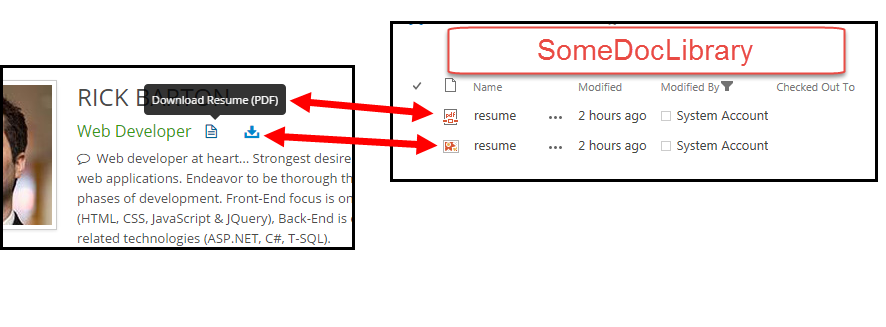

Live Demo: Click on icons at top of page
Problem: Need to provide user with PDF document of what the user sees on the website.
Situation: An HTML website is the best vehicle to deliver content and information to Internet users, IMO, however there exists many cases where users may need the content in a different format like PDF or PNG. Now, in comes an open source project to the rescue: http://wkhtmltopdf.org .
Overall Design: Create Powershell script to execute wkHTMLtoPDF (and wkHTMLtoIMAGE) and save output in local directory then use Powershell with SharePoint snapin to upload the docs to a SharePoint library. Run the Powershell script on a scheduled task to run multiple times a day so when a user clicks on a link on the website they can download a PDF (or PNG) whose content exactly matches that of the website’s content.
Powershell script:PS_Script.ps1
Overall script is: (A) setting arguments to pass to wkhtmltopdf.exe and to wkhtmltoimage.exe, (B) start the processes for the executables, (C) those processes will deposit the PDF and PNG of http://rickb.org/resume into a directory, (D) then it uses SharePoint objects to upload the files to a document library.
All we need to do is run the script with a scheduled task and the docs will be synced with the website every few hours.
End result:
User will click on some link/icon and they can download a PDF or PNG of exactly the same content that is on your website.
